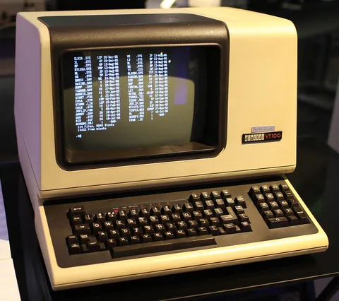

Basics of Shell scripting
Discover the power of Bash scripting in this comprehensive guide. Learn how to create, execute, and customize Bash scripts for automating tasks
By Sukalyan RoyPublished 6 min read

Long long ago I wrote this Shell scripting post, mainly out of my own curiosity.
Since then, i have written a few more posts on different things, forgot that I ever wrote that shell scripting one, and actually added a lot of little things to my notes.
To be completely up-to date with that, im adding some updates to this.
In a future post, there will a detailed dive into Linux OS specific Process Synchronization topics.
Commands #
-
lsis to list all files in a directory. You can use thels -alto print a more detailed view of everything. Thetreecommand shows a tree like view of the file system. -
File permissions explained
Refer to this guide: https://www.redhat.com/en/blog/linux-file-permissions-explained -
psto display the process tree. More specifically,ps -ejH -
kill PIDcan be used to kill processes. -
mkdir and rmdir used to make and remove directories
-
When removing several files using the
rmcommand, you might want to use therm -icommand so that it asks you whether you want to delete each file or not. It might be tedious but it also might save some of your important things you would have deleted mistakenly otherwise. -
cd for moving between directories. pwd to print the Present Working Directory.
-
There is also the
pushdandpopdcommands to add or remove directories into a stack for faster navigation. To list the elements of the stack usedirs. Once a directory is added to the stack, you can usepushdto switch between the first two elements in the stack. If you want to switchnplaces in either direction, usepushd +norpushd -nrespectively. -
cp and mv for copying and moving stuff respectively.
-Rcommand to move or copy entire directories. -
lncommand can be used to create links. It creates hard links by default.ln -s file_to_be_linked link_namecan be used to create soft or Symlinks. -
head allows you to view the beginning of a file or piped data directly from the terminal. tail works the same but it will show you the end of the file.
head -20shows you first 20 lines and similarly for tails. It can be any number instead of 20. -
Just like
catcan be used to print the text of a file forwards.taccan print it backwards.stringscommand helps us print only the human readable text out of a different filetype file. -
Use the
findcommand to find stuff.--typeto specify the type, wherefis for files,dfor directories etc.--nameto match the file name.find .restricts the searching to the current directory.-userfor specific user-sizefor size. Remember to write as77cfor a file of size 77 bytes. -
!!redoes the last command and!ndoes the nth command in your history. We can use theCtrl Rcommand to start a search for our previous commands, which we can then execute. This saves a lot of time. -
"command" --help or man "command" gives you info on the command.(Inverted commas not needed ofc) man can have the following syntax
man sectionNumber commandwhere the sectionNumber is an optional argument.
The table below shows the section numbers of the manual followed by the types of pages they contain.
1 Executable programs or shell commands
2 System calls (functions provided by the kernel)
3 Library calls (functions within program libraries)
4 Special files (usually found in /dev)
5 File formats and conventions, e.g. /etc/passwd
6 Games
7 Miscellaneous (including macro packages and conventions), e.g. man(7), groff(7), man-pages(7)
8 System administration commands (usually only for root)
9 Kernel routines [Non standard] -
If we wanted this script to run with bash the shebang would be
#! /bin/bash -
Piping just means passing the return value of a process as the input value of another process. We can do it with the
|symbol like<process1> | <process2>. -
Strings in bash can be defined with
'and"delimiters, but they are not equivalent. Strings delimited with'are literal strings and will not substitute variable values whereas"delimited strings will.foo=bar echo "$foo" # prints bar echo '$foo' # prints $foo
Scripting #
How to set the file #
-
First create a
.shfile. -
Start the first line with
#! /bin/bash. This tells that you want to use bash to execute this script -
Then write the code according to syntax
-
Then go into the shell and type
chmod u+x "filename"to make the script executable. -
Execute the script using
bash "filename" -
To add the script to usual commands of your shell, that is you can execute it no-matter where you are by directly typing a specific command, you have to create an alias for it. which is done as following
-
Press
cdto go to root directory -
Then type
vim .bashrcto enter the bash file -
Then add a line as following:
alias command_name="bash full path of the script" -
To make this easier you create a separate folder to store all the scripts.
-
Once you restart the terminal, all newly added alias commands can be executed from anywhere you are.
-
Syntax #
-
#is used to provide comments. -
To read data from the terminal and store it in a variable, use the following
read variable_nameTo add a custom msg typeread -p "Message" variable_name -
$@represents the position of command arguments starting from 1. The command itself is argument 0.
That is,#!/bin/bash for x in $@ do echo "Entered arg is $x" done -
In a script
$1denotes first argument,$2denotes 2nd argument. -
To reference a variable we must put
$before the variable name. -
A variable name should start with either an underscore or a letter. It can contain numbers too.
-
use the
echo "text"command to print text to the terminal. -
echo "text" > file.txtto overwrite a file. To append to the end of a file use>>instead. OR if you want other commands to save the output to a file, you docommand > text.txt.
To take input we do command < source_file
The std input output and error are indexed as 0,1 and 2 respectively.
9. To print the output of a command or assign it to a variable we do this:
var = `command`-
We can use
wccommand to find the number of words in a file. -
To use conditionals and loops
if [condition]; then statement elif [condition]; then statement else default stuff fi ``` `-a` means `&&` `-o` means `||` `-gt` means `>` `-lt` means `<`. `-eq` means `==` `-ne` means `!=` ``` While loop ```bash #!/bin/bash i=1 while [[ $i -le 10 ]] ; do echo "$i" (( i += 1 )) doneFor loop
#!/bin/bash for i in {1..5} do echo $i doneWe can also loop strings
for X in red green blueNote: Remember to add spaces after the brackets, that is
[[ condition ]]rather than[[condition]]. This small change caused me a lot of headache.
Debugging #
Write set -x at the beginning of your code to enable debugging mode.
You could also use CRON to schedule tasks, though I haven't used it yet. This is mainly a Linux thing.
More content on GDB to be added in a future post.
Short example #
So very recently I was trying out the SSH connection between my android devices and my desktop.
Basically, you need to setup a username and password for your device which you want to access, then use those in the device you want to connect from.
So if you want to access your android device from your desktop, you setup sshd on the android device and use ssh on your desktop.
I have written a short bash script to automate this process, as follows, it also allows to setup sftp interactive mode:
#! /bin/bash
#! /bin/bash
read -p "1. Login 2.copy " choice
read -p "press 1 for tab, 2 for mobile " device
if [[ $choice -eq 1 ]]; then
if [[ $device -eq 1 ]]; then
echo "Connecting to Tablet"
ssh username@ip-address -p 8022
elif [[ $device -eq 2 ]]; then
echo "Connecting to Mobile"
ssh username@ip-address -p 8022
else
echo "Wrong Choice"
fi
elif [[ $choice -eq 2 ]]; then
if [[ $device -eq 1 ]]; then
echo "Connecting to Tablet"
sftp -P 8022 username@ip-address
elif [[ $device -eq 2 ]]; then
echo "Connecting to Mobile"
sftp -P 8022 username@ip-address
else
echo "Wrong Choice"
fi
fiYou can add as many devices as you want to this. This was turned into a system command using the steps mentioned in the very beginning.
There are some other steps like setting up a password in the remote device or setting up the ssh keys, but this simple script does the job thereafter.
Parting words #
Once you get a hang of shell scripting, you can try out linux challenges such as Over the wire CTF.
I am a newbie in this myself, so I hope this little post helps you get started on this.
Resources #
https://www.freecodecamp.org/news/how-to-search-files-effectively-in-linux/